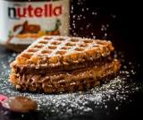

Waffle

Ingredients
- 2 cups all-purpose flour.
- 1 teaspoon salt.
- 4 teaspoons baking powder.
- 2 tablespoons white sugar.
- 2 eggs
- 1 ½ cups warm milk
- ⅓ cup butter, melted
- 1 teaspoon vanilla extract
Directions Step-By-Step
- Gather all ingredients.
- In a large bowl, mix together flour, salt, baking powder and sugar; set aside. Preheat waffle iron to desired temperature.
- In a separate bowl, beat the eggs. Stir in the milk, butter and vanilla.
- Pour the milk mixture into the flour mixture; beat until blended.
- Ladle the batter into a preheated waffle iron.
- Cook the waffles until golden and crisp.
- Serve immediately and enjoy!